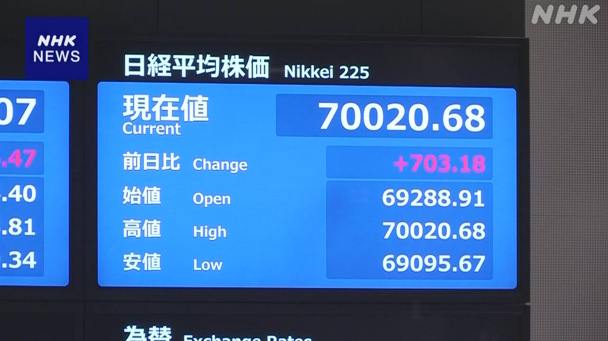

最新ニュース
1️⃣ 日本銀行が利子を1%にすることを決めた
日本銀行、日銀は、16日、利子を上げることを決めました。
今までの0.75%ぐらいから1％ぐらいにします。31年前と同じぐらい高い利子になります。
利子を上げた理由について、日銀は、物の値段が上がりすぎないようにするためだと言っています。
日銀は「このあとも利子を少しずつ上げていきたい。いつ上げるかは、日本の経済や物の値段の上がり方、イランなどの様子をよく見ながら考えたい」と話しています。
2️⃣ 日経平均株価 初めて7万円より高くなった

東京の株式市場で16日、日経平均株価が7万円より高くなりました。
日経平均株価は、代表的な株の平均の値段です。去年の秋に5万円より高くなって、今年4月に6万円より高くなりました。そして、16日の午後、初めて7万円より高くなりました。
これは、16日の日銀の発表を聞いて安心した人が多かったことも原因のようです。
株の値段が高くなったことについて、まちの人はいろいろなことを言っています。「うれしい。もっと高くなってほしい」と言う人もいます。「日本の実際の経済とは違うのではないか」と言う人もいます。
3️⃣ アイスクリームの値段 6つの会社が相談して決めていた疑い
アイスクリームを作っている6つの大きい会社についてのニュースです。
公正取引委員会は、6つの会社がアイスクリームの値段を相談して決めていたと考えています。法律に違反して、競争をしないで決めていた疑いがあります。
このため、16日から厳しいチェックを始めました。
6つの会社は、毎年1回か2回、アイスクリームの値段を5%から10%ぐらい上げてきました。理由は、材料や袋の値段、働く人の給料が高くなっているためだと言っていました。
公正取引委員会は、6つの会社が、値段をどのくらい上げるかや、いつ上げるかについても、相談して決めていたと考えて調べています。
4️⃣ 北海道 昔から続く「ホッカイシマエビ漁」が始まった
北海道の別海町で、「ホッカイシマエビ」というエビを取る漁が始まりました。
この漁は、昔から風の力で進む舟を使います。
エビが住む所の海草を傷つけないようにするためです。
夏になって、15日から今年の漁が始まりました。20ぐらいの舟が海に出ました。
海の中から網を上げると、たくさんの元気なエビが取れました。
最近、海の水の温度などが変わって、ホッカイシマエビは少なくなっているそうです。
漁をした人は「思ったより大きいエビがいました。これからもたくさん取ることができますように」と話していました。
- 〜こと
- 〜から
- 〜くらい / 〜ぐらい
- 〜まで
- 〜になる
- 〜ようにする
- 〜すぎる
- 〜ため
- 〜について
- 〜ている / 〜でいる
- 〜ように
- 〜ず / 〜ずに
- 〜後 / 〜あと
- 〜方
- 〜ながら
- 〜など
- 〜より
- 〜ようだ / 〜みたいだ
- 〜ではないか / 〜じゃないか
- 〜ので
- 〜し、〜し
- 〜がある / 〜がいる
- 〜ないで
- 〜ても / 〜でも
- 〜という
- 〜ところ
- 〜中
- 〜そうだ
- 〜ことができる
vebaev.github.io
Generated: 2026-06-16 15:56:03 UTC